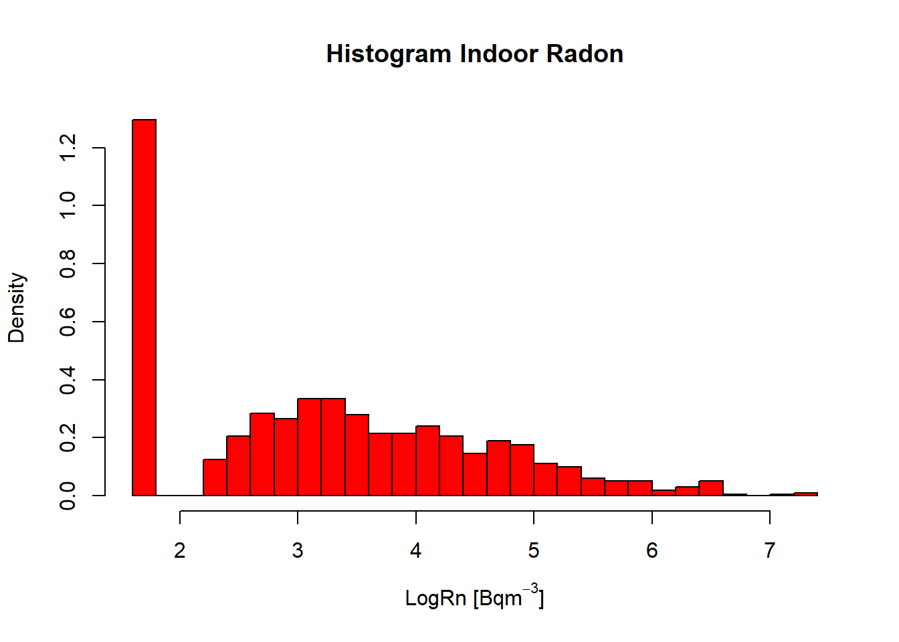

Chapter 2 Exploratory data analysis
2.1 Histogram (Rn)
hist(InRn$Rn,
prob = T,
col = "red",
breaks = 10,
main = "Histogram Indoor Radon",
xlab = expression("Rn " * "[Bq" * m^-3 * "]"))
StatDA::qqplot.das(InRn$Rn,
distribution = "norm",
col = 1, envelope = 0.95,
datax = T,
main = "Q-Q plot (InRn)")
## Box-Cox transformation ----
BCT <- MASS::boxcox(InRn$Rn ~ 1, lambda = seq(-1, 1, 1/100))
title("Box-Cox Transformation")
BCT <- as.data.frame(BCT)
# lambda <- BCT[BCT$y == max(BCT$y), ]$x # -0.17
# InRn$BCT <- (InRn$Rn^lambda-1)/lambda
lambda <- 0
InRn$LogRn <- log(InRn$Rn)## Histogram (logRn) ----
hist(InRn$LogRn,
col = "red",
breaks = 30,
prob = T,
main = "Histogram Indoor Radon",
xlab = expression("LogRn " * "[Bq" * m^-3 * "]"))
StatDA::qqplot.das(InRn$LogRn, distribution = "norm", col = 1, envelope = 0.95,datax=T, main = "Q-Q plot (log InRn)")## ROS: “ROBUST” IMPUTATION METHOD ----
DL <- 10
InRn_DL <- InRn
InRn_DL$Rn_Cen <- "FALSE"
InRn_DL[InRn_DL$Rn <= DL,]["Rn_Cen"] <- "TRUE"
InRn_DL$Rn_Cen <- as.logical(InRn_DL$Rn_Cen)
ROS <- NADA::ros(InRn_DL$Rn, InRn_DL$Rn_Cen, forwardT = "log")
ROS <- as.data.frame(ROS)
# Replace Dl by the modeled values
InRn_DL[InRn_DL$Rn_Cen == "TRUE",]["Rn"] <- ROS[ROS$censored == "TRUE",]["modeled"]
InRn_DL$LogRn <- log(InRn_DL$Rn)## q-q plots ----
par(mfrow=c(1,2))
StatDA::qqplot.das(InRn$LogRn,
distribution = "norm",
col = 1,
envelope = 0.95,
datax = T,
main = "Original data")
StatDA::qqplot.das(InRn_DL$LogRn,
distribution = "norm",
col = 1,
envelope = 0.95,
datax = T,
main = "After ROS") mean(InRn$Rn)#> [1] 64.08896 sd(InRn$Rn) #> [1] 126.327 exp(mean(InRn$LogRn))#> [1] 25.74388 exp(sd(InRn$LogRn))#> [1] 3.683979 RL <- 200 # Bq m-3
100*(1 - pnorm(log(RL), mean = mean(InRn$LogRn), sd = sd(InRn$LogRn)))#> [1] 5.795368 mean(InRn_DL$Rn)#> [1] 64.13248 sd(InRn_DL$Rn) #> [1] 126.3137 exp(mean(InRn_DL$LogRn))#> [1] 24.76532 exp(sd(InRn_DL$LogRn))#> [1] 4.043691 100*(1-pnorm(log(RL), mean = mean(InRn_DL$LogRn), sd = sd(InRn_DL$LogRn)))#> [1] 6.744583## Histogram (logRn) ----
par(mfrow=c(1,2))
hist(InRn$LogRn,
col = "red",
breaks = 30,
prob = T,
ylim = c(0, 0.5),
main = "Origical data",
xlab = expression("LogRn " * "[Bq" * m^-3 * "]"))
hist(InRn_DL$LogRn,
col = "red",
breaks = 30,
prob = T,
ylim = c(0, 0.5),
main = "After ROS",
xlab = expression("LogRn " * "[Bq" * m^-3 * "]"))
## Histogram, boxplot, q-q plot ----
par(mfrow = c(1,3))
hist(InRn_DL$LogRn,
col = "red",
breaks = 30,
prob = T,
main = "Histogram",
xlab = expression("LogRn " * "[Bq" * m^-3 * "]"))
lines(density(InRn_DL$LogRn), lwd = 1)
boxplot(InRn_DL$LogRn,
notch = TRUE,
col=2,
varwidth = TRUE,
main = "Boxplot",
ylab = "Lognormal transformation",
xlab = expression("LogRn " * "[Bq" * m^-3 * "]"))
StatDA::qqplot.das(InRn_DL$LogRn,
distribution = "norm",
col = 1,
envelope = 0.95,
datax = T,
ylab = "Observed Value",
xlab = "Expected Normal Value",
main = ("Normal Q-Q plot"),
line = "quartiles",
pch = 3,
cex = 0.7,
xaxt = "s")
2.2 Spatial distribution
## Plot InRn measurements in Bq/m3 (with ggplot2) ----
P_Rn <- ggplot() +
geom_sf(data = Grids_10km) +
geom_sf(data = InRn_DL, aes(color = Rn)) +
scale_color_gradient(name = "Bq/m3", low = "blue", high = "red") +
ggtitle("Indoor radon measurements (Simulated)")
P_Rn
## Change intervale in the Rn scale ----
breaks <- c(0, 50, 100, 200, 300, 500, max(InRn_DL$Rn))
InRn_DL <- InRn_DL %>% mutate(brks = cut(Rn, breaks, include.lowest = T, right = F))
cols <- colorRampPalette(c("blue", "red"))(6)
# cols <- terrain.colors(6)
# cols <- heat.colors(6, alpha = 1)
# cols <- colorRampPalette(c("yellow", "red"))(6)
P_Rn_brks <- ggplot() +
geom_sf(data = Grids_10km) +
geom_sf(data = InRn_DL, aes(fill = brks, color = brks)) +
scale_fill_manual(name = "Bq/m3", values = cols, guide = guide_legend(reverse = TRUE)) +
scale_color_manual(name = "Bq/m3", values = cols, guide = guide_legend(reverse = TRUE)) +
ggtitle("Indoor radon measurements (Simulated)")
P_Rn_brks## Plot if Rn is higher than Reference level (1) or not (0) ----
# Transform InRn to: 1 if Rn >= RL or 0 if Rn < RL ("Case")
RL <- 200 # Bq m-3
InRn_DL <- InRn_DL %>% mutate(Case = as.factor(ifelse(Rn >= 200, yes = 1, no = 0)))
P_Cases <- ggplot() +
geom_sf(data = Grids_10km) +
geom_sf(data = InRn_DL, aes(fill = Case, color = Case)) +
scale_fill_manual( name = "Bq/m3", labels = c("< 200",">= 200"), values = c("lightgreen", "red")) +
scale_color_manual(name = "Bq/m3", labels = c("< 200",">= 200"), values = c("lightgreen", "red")) +
# theme(legend.position = "none") +
ggtitle("Indoor radon measurements (Simulated)")
P_Cases## Kernel density plots ----
# The resulting density map is “noisier” for small bandwidth (h)
# and “smoother” for large bandwidth (h).
# A rule-of-thumb for an optimal value is h ≈ max(sx, sy)*0.7*n^-0.2
# where n is the number of points,
# and sx and sy the standard deviations of x- and y- coordinates of the points
# See printed version of the EU Atlas for further information (in progress)
# 2.4. Statistics, measurements, maping (part wirtten by P. Bossew)
# All dwelling sampled (e.g. for detecting possible clusters; avoid overplotting)
H <- st_coordinates(InRn_DL)
h <- max(sd(H[,"X"]), sd(H[,"Y"])) * 0.7 * nrow(H)^-0.2
KP_all <- InRn_DL %>%
st_coordinates() %>%
as_tibble() %>%
ggplot() +
geom_sf(data = Grids_10km) +
stat_density_2d(aes(X, Y, fill = ..level.., alpha = ..level..),
h = h,
geom = "polygon") +
scale_fill_distiller(palette = "Spectral") +
theme(legend.position = "none") +
#geom_sf(data = InRn_DL, size = .1) +
ggtitle("Kernel density plots (all data)") +
labs(x = "", y = "")
KP_all# Only dwellings with InRn > RL (cases == 1)
H <- st_coordinates(filter(InRn_DL, Case == 1))
h <- max(sd(H[,"X"]), sd(H[,"Y"])) * 0.7 * nrow(H)^-0.2
KP_Cases <- InRn_DL %>% filter(Case == 1) %>%
st_coordinates() %>%
as_tibble() %>%
ggplot() +
geom_sf(data = Grids_10km) +
stat_density_2d(aes(X, Y, fill = ..level.., alpha = ..level..),
h = h,
geom = "polygon") +
scale_fill_distiller(palette = "Spectral") +
theme(legend.position = "none") +
geom_sf(data = filter(InRn_DL, Case == 1), size = .1) +
ggtitle("Kernel density plots (InRn >= 200 Bq/m3)") +
labs(x = "", y = "")
KP_Cases
# Only dwellings with InRn < RL (cases)
H <- st_coordinates(filter(InRn_DL, Case == 0))
h <- max(sd(H[,"X"]), sd(H[,"Y"])) * 0.7 * nrow(H)^-0.2
KP_No_Cases <- InRn_DL %>% filter(Case == 0) %>%
st_coordinates() %>%
as_tibble() %>%
ggplot() +
geom_sf(data = Grids_10km) +
stat_density_2d(aes(X, Y, fill = ..level.., alpha = ..level..),
h = h,
geom = "polygon") +
scale_fill_distiller(palette = "Spectral") +
theme(legend.position = "none") +
geom_sf(data = filter(InRn_DL, Case == 0), size = .1) +
ggtitle("Kernel density plots (InRn < 200 Bq/m3)") +
labs(x = "", y = "")
KP_No_Cases# Plot two (or more) figures in one
library(gridExtra)
grid.arrange(KP_No_Cases, KP_Cases, nrow = 2) grid.arrange(KP_No_Cases, KP_Cases, nrow = 1)
# InRn vs Geologia ----
P_BG <- ggplot() +
geom_sf(data = Country) +
geom_sf(data = IGME5000, aes(fill = AgeName), colour = NA) +
geom_sf(data = InRn_DL, aes(), colour = 1, cex = 0.8) +
scale_color_gradient(low = "blue", high = "red") +
ggtitle("Geology 1:1M")
P_BG## Intersect ----
InRn_DL_BG <- st_intersection(InRn_DL, IGME5000)## Boxplots ----
par(mar = c(9,5,3,0.5), oma = c(0, 0.5, 0.5, 0.5), mfrow = c(1,1))
boxplot(LogRn ~ AgeName, InRn_DL_BG, col = 2,
varwidth = TRUE,
notch = T,
las = 2,
ylab = expression("LogRn " * "[Bq" * m^-3 * "]"),
xlab = "",
main = "Geology (AgeName)")# ANOVA ----
lm_BG <- lm(LogRn ~ AgeName, InRn_DL_BG)
summary(lm_BG)#>
#> Call:
#> lm(formula = LogRn ~ AgeName, data = InRn_DL_BG)
#>
#> Residuals:
#> Min 1Q Median 3Q Max
#> -3.9519 -0.9035 -0.0294 0.9739 4.0480
#>
#> Coefficients:
#> Estimate Std. Error t value Pr(>|t|)
#> (Intercept) 2.8219 0.1038 27.192 < 2e-16 ***
#> AgeNameEarly Triassic 0.2549 0.1363 1.871 0.061688 .
#> AgeNameLate Devonian 0.5174 0.1325 3.904 0.000101 ***
#> AgeNameLate Jurassic 0.8586 0.1366 6.283 4.96e-10 ***
#> AgeNameLate Permian -0.2470 0.1838 -1.344 0.179315
#> AgeNameMiddle Jurassic 0.7674 0.4641 1.653 0.098557 .
#> ---
#> Signif. codes: 0 '***' 0.001 '**' 0.01 '*' 0.05 '.' 0.1 ' ' 1
#>
#> Residual standard error: 1.357 on 994 degrees of freedom
#> Multiple R-squared: 0.06134, Adjusted R-squared: 0.05661
#> F-statistic: 12.99 on 5 and 994 DF, p-value: 2.894e-12 anova(lm_BG)#> Analysis of Variance Table
#>
#> Response: LogRn
#> Df Sum Sq Mean Sq F value Pr(>F)
#> AgeName 5 119.61 23.9222 12.99 2.894e-12 ***
#> Residuals 994 1830.49 1.8415
#> ---
#> Signif. codes: 0 '***' 0.001 '**' 0.01 '*' 0.05 '.' 0.1 ' ' 1